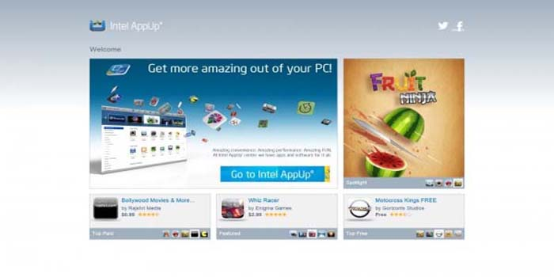
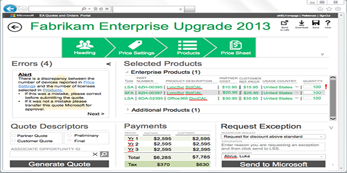
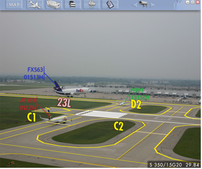

Degrees in Psychology, Human Factors, and Information Science
14 years total experience working in user experience, interface design, and business analysis
Proficient with Adobe Illustrator, Photoshop, and iRise
3 years experience with Agile development processes as Scrum Designer and Product Owner
Currently taking certification courses from the University of Washington in Javascript, and HTML5, CSS, and Responsive Web
Currently working as scrum team designer for JPMC
Summary
I was born in Ogden, Utah. I have studied Psychology, Human Factors, and Information Science. I have worked as a User Researcher, Interaction Designer, and dabble in Business Analyst type work. I have taken classes in Basic, Fortran, Pascal, C#, Java, HTML, CSS, and dabbled in HTML 5, CSS, and Javascript on my own.
Project Highlights
Project 1: Intel App Up

Design I helped create at Intel for their App-Up app store.
Project 2: Microsoft Volume Licensing

Design I created while working with Microsoft's Volume Licensing team.
Project 3: ARATTA

Design I created while working at Information in Place Inc. It is an augmented reality air traffic tower application to help tower controllers track and identify aircraft on the tarmac.